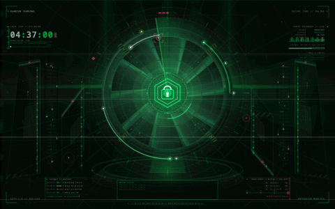

Procedurally generated in Swift — a machined iris vault, rotating threat radar, code-rain data walls, a live terminal clock, and a sentinel console. Every 15 seconds it drops into a red lockdown. Zero stock footage, zero network calls.

The exact 30-second loop, rendered frame-by-frame from the live scene.
The environment is generated by code, not shipped as opaque artwork.
Every motion term has an integer period, so the screen saver restarts with no seam.
A neon chrono shows your real local time right on the desktop.
DEFCON badge, red alert band and pylon strobes every 15 seconds.
Drops to 10 fps on battery and 2 fps when covered, to protect your Mac.
No accounts, no analytics, no telemetry. It never phones home.
App bundle + 8K loop + lifetime updates, delivered instantly.
Buy now — $5MIT-licensed — you can also build it free from source.